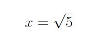

HW1: Calculate the Square Root of a number¶
This assignment is designed to start you using your brain to think logically (and clearly). There is no “right answer” to this one, each of you might come up with something different (or nothing at all if it stumps you, hopefully that will not happen. Send me email if you get stuck!) You will submit a simple text file with your solution to Blackboard. Use something like Microsoft Notepad until you get a good programmer’s editor set up, but do not use Microsoft Word for anything in this course.
Warning
You will soon discover that you really do need to read assignments carefully, especially in this course. Do not go off and start working on a solution until you are sure you understand the problem. Many (most) students get so focused on the example shown here, that they miss the fact that this is a general problem, not just the one shown in the example!
Note
You will need to upload lab work using BlackBoard. To do this, open up the “Lab assignments” page. You will see this lab assignment there. When you are ready to submit your work, click on the Lab title. You will be taken to a page where you can upload one or more files. I would make sure all files you need to submit are in the same folder, and use “Control-Click” to select all files at once. When you are happy with the selection, click on submit.
If you forget to load everything at once, I have to delete your submission and let you try again Email me if this happens.
You will have one file to upload this week: SquareRoot.txt
What does this mean?¶
x = sqrt(5)
Note
This assignment is not just to calculate the square root of 5, this is an example, the number you need to process could be any positive number (why not negative?)
If you own a calculator, you can probably figure this out. The sqrt thing
is called a function. A function is a magical gadget that can do some
work for you. We do not need to know how this magic happens most of the time,
that is what the calculator is for. But what if you needed to design the
calculator. How will you get the magic to happen?
You should have run into these function things in your math classes. How you
get out the actual value for x without using a calculator was probably left
as a puzzle for you to figure out. Let’s try to do that here!
Back to your math class¶
You probably saw something like this in your math text:
This is an equation. The two things on either side of the = symbol are
supposed to be equal. (That is why we call it an equal symbol - DUH!)
You were probably also told that if you figured out the right value for the
x thing, this equation would be true as well:
Now, most computers cannot generate that funny little 2 in that equation,
so we will show it this way instead:
Now we have another problem. Many math books show things this way, but how do
we really know that xx means x times x? (I know, you saw it written
this way a lot, and the symbols were always one character long.) We will solve
this problem by using a new symbol for multiplication (no, we will not use
x that would really get confusing. Instead, we will use a star: *. So
that last equation would look like this:
x * x = 5
That * symbol means multiply. Got it all figured out now?
The question we want to address in this lab is simple.
How do we go about figuring out the right value for "x"?
Your problem¶
Suppose you have a basic four-function pocket calculator that can only do addition, subtraction, multiplication, and division. How would you approach figuring out the answer? Think about this, and try to come up with a scheme that will give you the answer. Do not just use simple trial and error, think about how you might get an accurate answer. You might start off with a one digit guess, like 2 or 3, then add a digit after the decimal point to refine your guess. Your calculator will help you check your guesses.
It might (should) occur to you that you need some way of telling if your guesses are getting better, or worse. Also, you need a way to decide when you are done, your answer is “good enough”. That might be when you have five decimal places to the right of the “dot”. You get to decide for now.
No fair just turning to Google to find the scheme. You need to start thinking problems through by yourself. So do your own thinking about this, remembering that we are trying to teach a computer how to do the work. The goal is to produce a list of the steps needed to figure out the right value for “x” using just the multiply key on the calculator
Note
If you do not happen to own a calculator, there is one on your computer. Go
to Start -> All Programs --> Accessories --> Calculator. (There will
be a square-root key on that calculator. You may use it only to see what
the right answer is, not to figure out the answer.
Checking your work¶
You should write down the process you come up with clearly enough that another person could use your process to figure out the answer. You should practice doing this by following your own steps exactly. This is hard to do when you wrote them down, since you “know” what you meant. Remember that someone else will not have that knowledge and will do something you never expected. (Silly people). They will do what you say to do, not what you meant for them to do. (Some times they will even do things you did not say to do! Arrrgh!) When teaching a dumb computer to do your work, trust me, it will never do what you mean, only what you say!
To make sure your scheme works on general problems, try it out on some number other than 5, say 35 for example!
What to turn in¶
Once you think you have a solution, write it up using short numbered sentences that explain what you need to do. Nothing fancy is required, do the best you can. We are learning new stuff here, so try to be clear.
Save your work in a file named “SquareRoot.txt”. If you named it something else, you can rename it before turning it in.
At the end of your notes, pick some number and work through your instructions carefully and see what you produce. Hopefully, your values will be getting better and better. If not, do not worry about it for now, but you might think about why this is not working they way you wanted it to!
What to Submit¶
Upload the one file: “SquareRoot.txt” to Blackboard.
When is This Due?¶
Assignments are due on Sunday of the week assigned for full credit.
Note
Unless explicitly told otherwise, all work you submit for this course must be produced using a simple text editor. All files submitted for grading must be produced using the editor you use to create program code. I will go over one such tool, gVim, but you are free to use any editor you are comfortable as long as it produces simple ASCII text files. See me if you have questions about any tool you want to use.